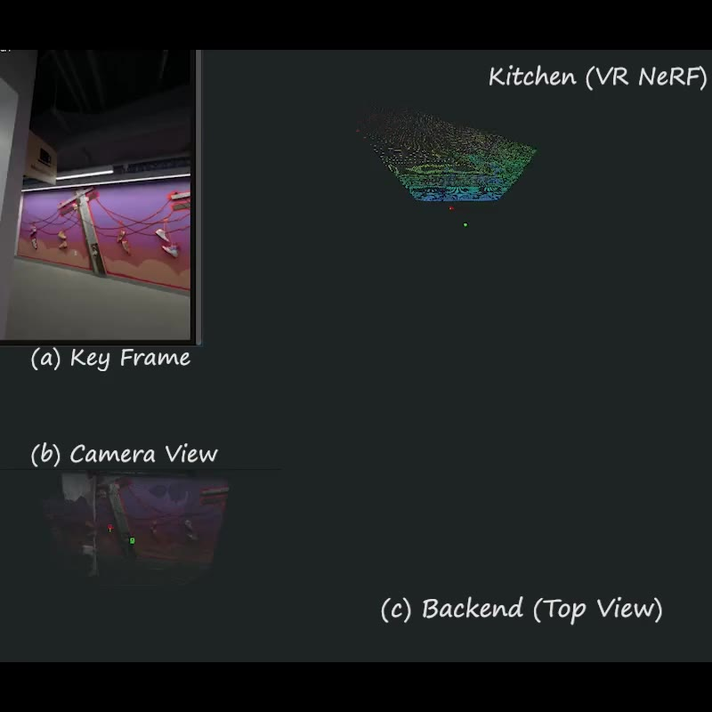

{kind=link}
ResearchI’m broadly interested in 3D learning, generation, and reconstruction—how AI systems can perceive and model the physical world in three dimensions. My past work has focused on inferring geometry, motion, and appearance from images through radiance-field-based representations. I’m also expanding my interests toward robot learning, exploring how embodied agents can leverage 3D understanding to perceive and interact with their environments. |
|
 |
ARTDECO: Towards Efficient and High-Fidelity On-the-Fly 3D Reconstruction
with Structured Scene Representation
Guanghao Li, Kerui Ren, Linning Xu, Zhewen Zheng, Changjian Jiang, Xin Gao, Bo Dai, Jian Pu, Mulin Yu Jiangmiao Pang arXiv, 2025 project page / arXiv By unifying 3D foundation priors with structured scene representations we enable robust and generalizable 3D reconstruction of diverse real-world scenes using only monocular video. |
Education |
|
Carnegie Mellon University, Pittsburgh, PA M.S. in Computer Vision, expected Dec 2026 Relevant Coursework: Advanced Computer Vision, Learning for 3D Vision, Robot Learning |
|

|
University of Washington, Seattle, WA B.S. in Mathematics and B.S. in Informatics, June 2022 Graduated with Interdisciplinary Honors (GPA: 3.75/4.00) Relevant Coursework: Machine Learning, Computer Vision, Algorithms, Data Structures, Linear Algebra, Multivariable Calculus, Probability and Statistics, Numerical Analysis |
Work |

|
Shanghai AI Laboratory, Shanghai, China Research Assistant, Feb 2024 - Aug 2025 |
|
ObvioHealth USA, New York, NY Machine Learning Engineer, Aug 2022 - June 2023 |
MiscellaneaI enjoy playing badminton, building computers, linux-ricing, and figuring out automation puzzles. |
|
Template stolen from Jon Barron. |